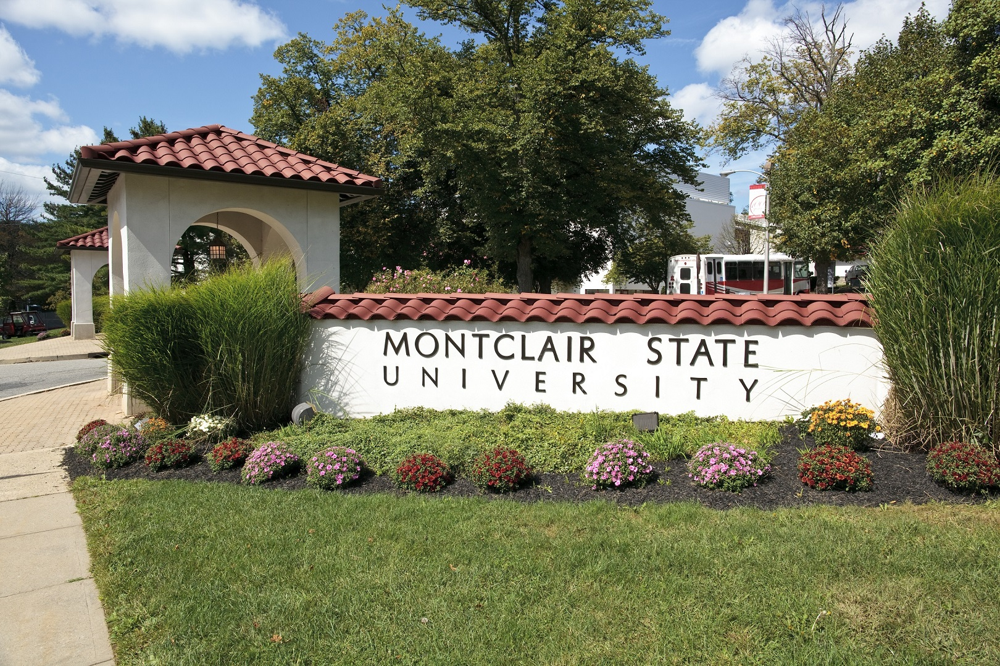

I must say today proudly that I chose the correct profession for me. It’s a great job! However, a "World Wide Company Covid layoff" in early 2020 (and work stoppage as nobody was hiring anyone then) eliminated my situation and forced me to regroup to retrain and stay sharp as I "rebranded" me for today. (I have learned website design and more.) I am extremely confident I will be back in this awesome profession again soon.
MY EDUCATION

It's important to note that I studied Fine Arts (1988-1990) at the County College of Morris (CCM) and Graphic Design (1990-1992) at Montclair State University, both in Northern NJ, to earn a AA Degree and BA Degree, respectively.

WHERE DID I GO?

From 2020 to now, I have been working as a Personal Shopper with both ShopRite #355 (2020-2022) in Parsippany, NJ and then with Walmart #2503 (2022-Present) in Hackettstown, NJ. (Mansfield Commons)

A GREAT HONOR RECIEVED THAT I AM VERY PROUD OF:
In March of 2024, I won 2nd Shift Associate of the Month Award. During that time at Walmart #2503 as an Online Shopper, I worked the 11 am to 8 pm shift and it was an honor for sure as the store Managers all voted for me to get this.”

I am having great success at Walmart as I did when I was working at ShopRite as my past corporate training has "flexed my muscles each day for victory" today at store level.
I am extremely convinced my background of creating supermarket circulars in my career past translates well in this "store level setting" as a productive Personal Shopper. My knowledge of advertising that I learned in the corporate setting pertaining to items in the circular are now in the store to collect each day. While working in store, I became a better graphic designer I feel in advertising. You can call it the "boots on the ground approach."
For example, in the past, I would insert on a page cereal using Indesign in the flyers of A&P or Giunta's in the corporate offices. Today, I am getting that same cereal in Aisle A-16* at Walmart in the store. (*Cereal location: as of Spring and Summer 2024 before store remodel that fall.) I indeed learned how to be a better graphic designer while at ShopRite and Walmart.
ALL ABOARD!!
My "resume journey" awaits...First Stop